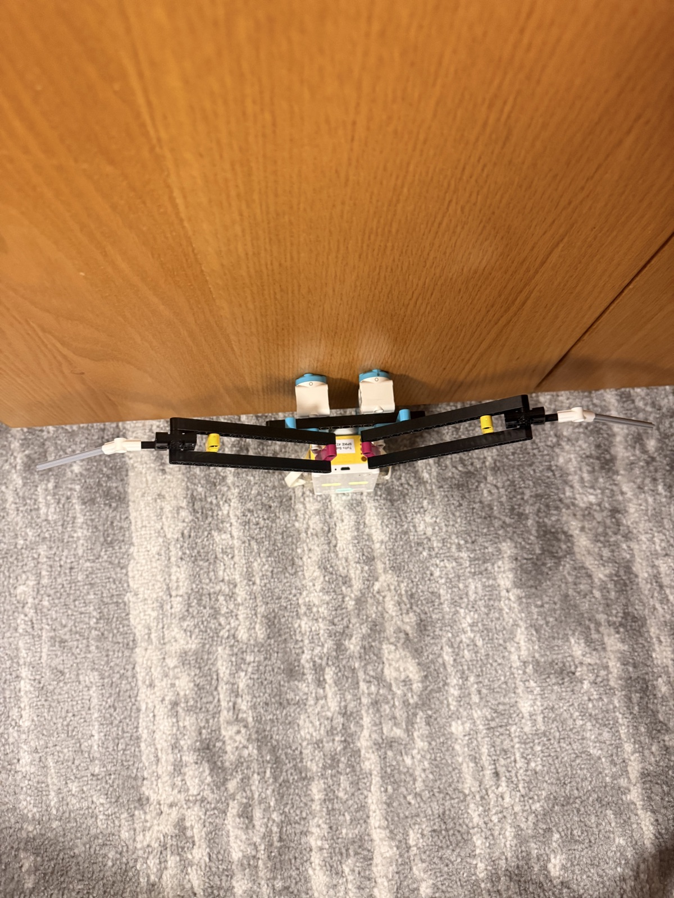

04 M — Sheet 05 / 07
Project 3: Biomimicry
Bio-Inspired Structure/Function Analysis

The project was to build a bio-inspired robot: pick an animal, work out the structure-function relationship that lets it do what it does, and rebuild that relationship out of LEGO. I picked a seagull, and the movement I went after was the flap of its wings. I built this one alone, driven by motors only.
Each wing is two long beams running side by side out from the body, with a joint partway along where the wing changes angle, and a thin rod carrying the span the rest of the way to the tip. Two motors sit behind the hub and drive them.

The hard part was the flapping. A gull's wing is not a straight rod: it is bent, and the bend changes through the stroke. Every piece I had was rigid and straight. Making something read as a bent, flapping wing out of parts that cannot bend was the whole problem. What I ended up with is a wing broken into segments that meet at an angle, so a run of straight pieces together reads as a curve.
The brief also had an extra challenge: work out how the animal senses and reacts to its environment, and replicate that with a SPIKE Prime sensor. I did not get to that part. This one is motors only.